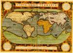

Typus orbis terrarum. Ab. Ortelius describ[ebat] cum privilegio decennali 1587. [Schaal circa 1:83.000.000, ovale projectie]. Kopergravure, gekleurd, 355 x 490 mm. In: A. Ortelius, Theatrum orbis terrarum. Antverpiae, officina Plantiniana, 1592. -- (COLLBN Atlas 41)
De eerste uitgave van het Theatrum orbis terrarum van Abraham Ortelius in 1570 te Antwerpen is een mijlpaal in de geschiedenis van de cartografie. Vergeleken met vroegere boekwerken waarin grote aantallen kaarten waren opgenomen, zoals de Geographia van Ptolemaeus of de kosmografieën van Petrus Apianus en Sebastian Münster, munt dit werk uit door de kritische zorgvuldigheid waarmee het werd samengesteld. Dank zij goede contacten met geleerden in heel Europa kon Ortelius beschikken over het meest recente bronnenmateriaal. In de Catalogus auctorum, waarmee de atlas begint, legt hij verantwoording af van de door hem gebruikte kaarten. Het Theatrum onderscheidt zich van de ongeveer tegelijkertijd in Italië uitgegeven Lafreri-atlassen doordat het niet in opdracht van een willekeurige koper werd samengesteld, maar door de uitgever werd geredigeerd, met het gevolg dat alle exemplaren van een zelfde uitgave identiek waren. Ook trachtte Ortelius zijn atlas up-to-date te houden door er regelmatig supplementen aan toe te voegen. Het atlas-programma, de redactionele planning en het streven naar uniformiteit in de uitvoering maken het Theatrum tot de eerste moderne atlas. Na de eerste editie met zeventig kaarten op drieënvijftig bladzijden volgden er nog veertig; ten slotte was het aantal kaarten gegroeid tot honderdvijftig. De grote vraag naar geografische informatie deed ook andere atlassen spoedig het licht zien, zoals het Speculum orbis terrarum van Gerard de Jode (Antwerpen 1578) en de Atlas van Gerard Mercator (Duisburg 1585).
Een van de Orteliuskaarten die regelmatig werden vernieuwd is deze door hemzelf in 1587 getekende wereldkaart. Ze is gevat in een minutieus uitgevoerde omlijsting bestaande uit rolwerk, waaraan Ortelius, wiens wetenschappelijke belangstelling eigenlijk op de klassieke oudheid was gericht, enkele moraliserende teksten van Seneca en Cicero had toegevoegd. Wat de inhoud betreft is de getoonde kaart identiek aan twee vroegere versies uit de voorafgaande edities, op twee wijzigingen na: de zuidwestelijke kustlijn van Zuid-Amerika vertoont nu een rechte lijn en de Solomon-eilanden bij Nieuw-Guinea zijn toegevoegd. Alle drie steunen ze geheel en al op de grote wereldkaart op wassende graden, die Gerard Mercator één jaar voor de eerste uitgave van het Theatrum, in 1569, het licht had doen zien. Zowel atlas als kaart draagt een titel die herinnert aan de voorstelling van de bewoonde wereld als een ronde schijf, de ‘orbis terrarum’, zoals we die uit de Oudheid kennen of zoals Ortelius zelf haar in de eerste Nederlandse editie van 1571 omschrijft: ‘Dese chaerte begrijpt in haer een beschrijvinghe des gantschen aertbodems met der zee, sooser om ende tusschen loopt.’
Literatuur
- J. Dénucé, Oud-Nederlandsche kaartmakers in betrekking met Plantijn. Antwerpen [etc.] 1912-1913. 2 dln.
- L. Bagrow, A. Ortelii Catalogus Cartographorum. Gotha 1928-1930 (= Petermanns Mitteilungen. Ergänzungsheft. 199, 210).
- C. Koeman, The history of Abraham Ortelius and his 'Theatrum orbis terrarum'. Lausanne 1964.
- C. Koeman, Atlantes neerlandici. Bibliography of terrestrial, maritime and celestial atlases and pilot books, published in The Netherlands. Amsterdam [etc.] 1967-1986. 6 dln, dl. 3, p. 25-83, Ort 1 A -- Ort. 76.
- R.A. Skelton, ‘Bibliographical note’, in: Abraham Ortelius, Theatrum orbis terrarum. Antwerp 1570. Facs. ed. Amsterdam 1964.
- F. Wawrik, Berühmte Atlanten. Kartographische Kunst aus fünf Jahrhunderten. Dortmund 1982, p. 58-64.
- R. Shirley, The mapping of the world. Early printed world maps, 1472-1700. London 1983, nr. 119, 122, 153, 158.
| vorige pagina | top pagina |